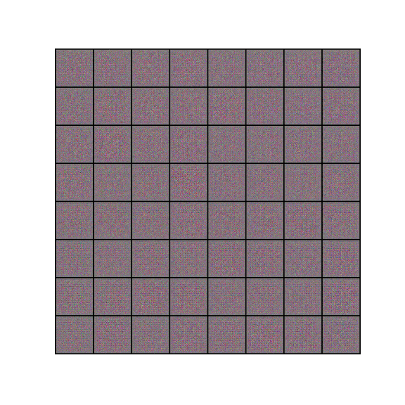
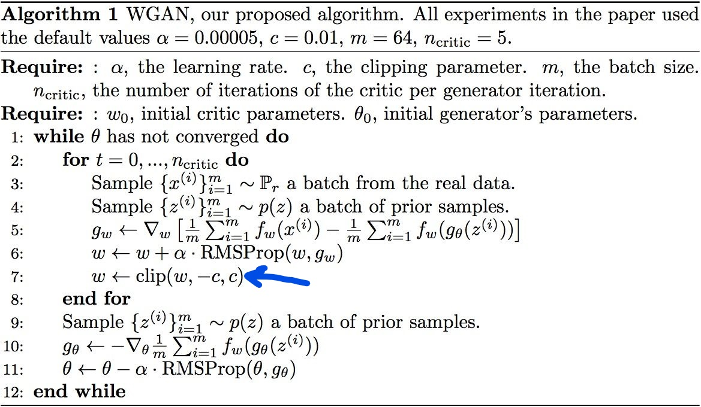
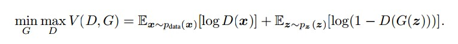
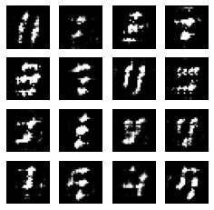
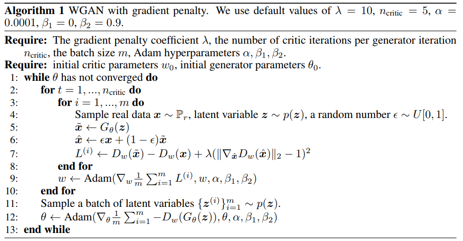
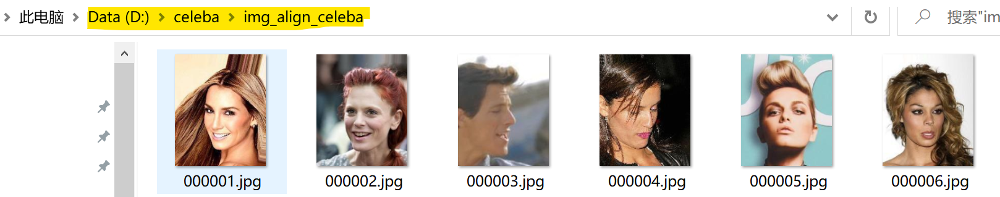
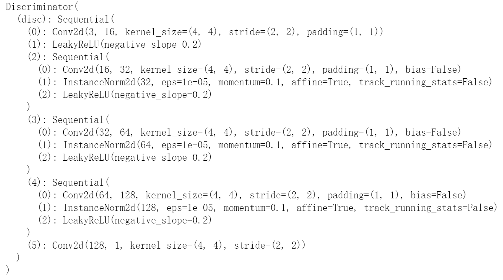
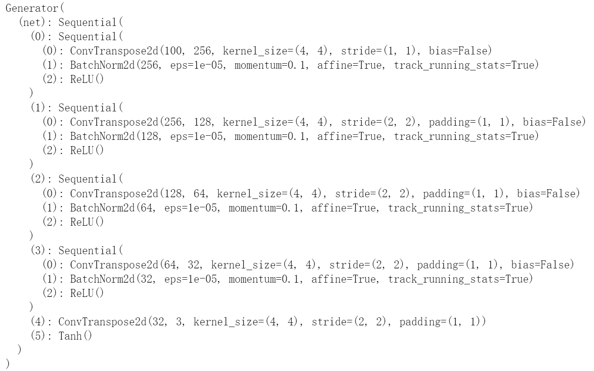
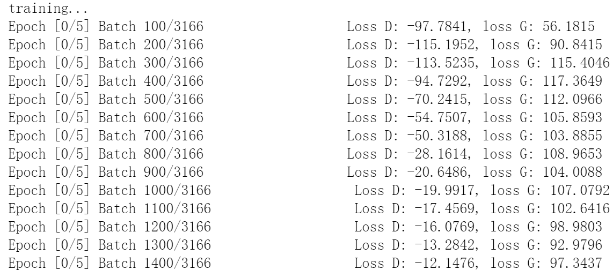

从GAN到WGAN再到WGAN-GP
之前介绍了GAN的原理，并使用celeba数据集训练了一个基于DCGAN的”假”人脸生成器（传送门戳我），这里我把它的生成效果图搬运过来了

在GAN问世后，其出色的表现使得对于GAN的研究一时风生水起(至今还在持续)，越来越多关于GAN的研究成果被发表，GAN本身存在的缺陷也逐步被挖掘出来。
本文不会陷入繁杂的数学推导中，而是指出WGAN相比于原始GAN的改进之处，以及进一步提出的WGAN-GP，并动手用PyTorch进行实现。
WGAN
WGAN便是对于原始GAN的一种改进方案，它的作者用了大量篇幅指出了原始GAN的不足之处，并最终给出了自己的解决方案。虽然其中蕴含了大量的数学推导，但推导的结论却出乎意料的简单，或许这就是数学的魅力。
说完一堆废话后，来看看改进得到的WGAN相比于原始GAN有哪些改动，这里直接把WGAN作者给出的训练算法贴出来，然后做简要分析。

5和10分别给出了判别器和生成器的损失函数，相比于原始GAN 的损失函数，仅仅是去掉了log。如果不能一下子看出来，可以把原始GAN的目标函数搬过来对比下。
原始GAN的优化目标：

其中的E代表期望，由大数定律，我们可以用均值近似代替期望，这便有了WGAN中的$\frac 1m\sum_{i=1}^{m}$。
7将判别器的权值截断到一个指定的区间内，这使得判别器满足$Lipschitz$限制，其导数取值会被限制在这个区间内。
在原始的GAN中，判别器做的是二分类任务，所以最后一层是Sigmoid。但在WGAN中，判别器拟合的是$Wasserstein$距离，做的是一个回归任务，因此最后一层的输出不再需要Sigmoid了。
总结来说，WGAN相比于原始GANA 的改动如下：
(1) 损失函数不取
log。原始GAN的损失函数有log，因此在代码实现时选择了交叉熵度量损失，而WGAN的损失函数不取log，从而可以根据大数定律用均值近似代替期望，这样在代码实现时用类似torch.mean的函数来度量损失即可；
(2) 将判别器的权值截断到一个指定的区间内；
(3) 去掉判别器最后一层的Simoid；
(4) 不用基于动量的优化算法（momentum，Adam），这里按照原论文用RMSProp。
WGAN-GP
WGAN虽然在理论上改正了原始GAN 的一些问题，但是它对于判别器采用的梯度截断技巧，使得更新判别器时的梯度并不是真正的属于判别器的梯度，事实上，这不利于网络的训练。我之前用Keras训练过一次WGAN，大家可以看看效果

嗯，效果还没有之前的DCGAN结果好。
主要原因就在于权值截断这个动作太过于一刀切
若判别器的权值被限制在很小的区间，那么梯度在经过很多层传播后可能会变为0（梯度消失）；若判别器权值的取值范围很大，那么梯度在经过很多层传播后可能会飞出去（梯度爆炸）。也就是说，只有不断尝试，找到合适的限制范围，才能保证梯度是正常的。那有没有更好的解决方案呢？
所以有了接下来针对WGAN的改进：WGAN-GP
还是直接把WGAN-GP的算法贴出来

它摒弃了权值截断这种粗暴的方式，而是采用添加正则项的方式来使得判别器满足$Lipschitz$限制。7中的$\lambda$后面就是该正则项，它迫使判别器的梯度与1接近，接近的具体程度由$\lambda$来控制。这等价于对判别器实施了$Lipschitz$限制。
用PyTorch实现WGAN-GP
本节将根据WGAN-GP的算法步骤，使用PyTorch，基于之前使用过的celeba数据集训练WGAN-GP模型，得到一个WGAN-GP人脸生成器。
导入依赖库
1 | from __future__ import print_function |
参数设置+数据集准备
这里还是使用celeba人脸数据集。

1 | device = "cuda" if torch.cuda.is_available() else "cpu" |
搭建生成器和判别器网络
1 | class Discriminator(nn.Module): |


权值初始化方案
1 | # 权值初始化方案 |
初始化网络+设置优化器
1 | #这里的critic就是discriminator |
梯度惩罚(GP)
这就是WGAN-GP中的GP，按照论文中给出的算法步骤实现如下：
1 | def gradient_penalty(critic, real, fake, device="cpu"): |
开始训练
1 | img_list = [] |

人脸生成质量演变过程可视化
1 | fig = plt.figure(figsize=(8,8)) |

一开始生成的是无意义的噪声图像，随着训练迭代次数的增加，生成的图像越来越接近人脸，不过总体来说还是与真实人脸图像有些差距。
从中可以很清楚的观察到WGAN-GP相较于原始GAN的一个优点，那就是WGN-GP更加稳定。具体来说，WGAN-GP生成的人脸的大致形状在若干次迭代后基本固定了，在后续的迭代中，做的更多的是对生成人脸的细节进行微调，而没有大幅度的变动。
参考：